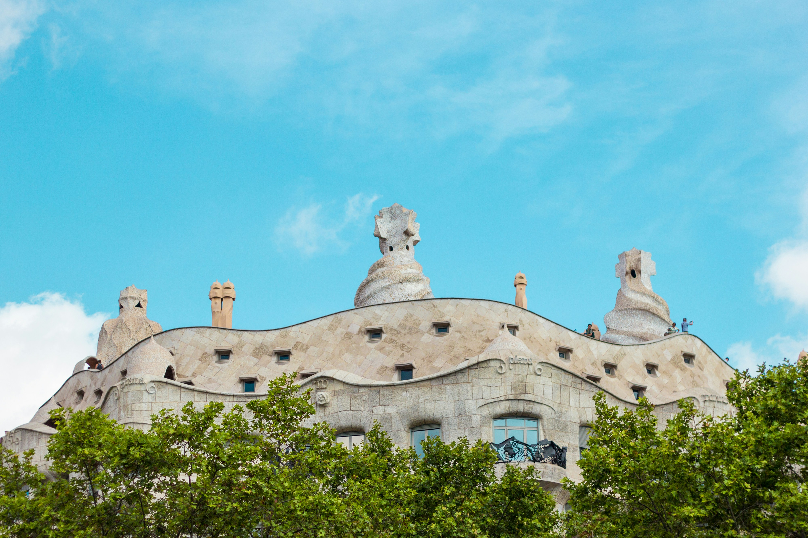
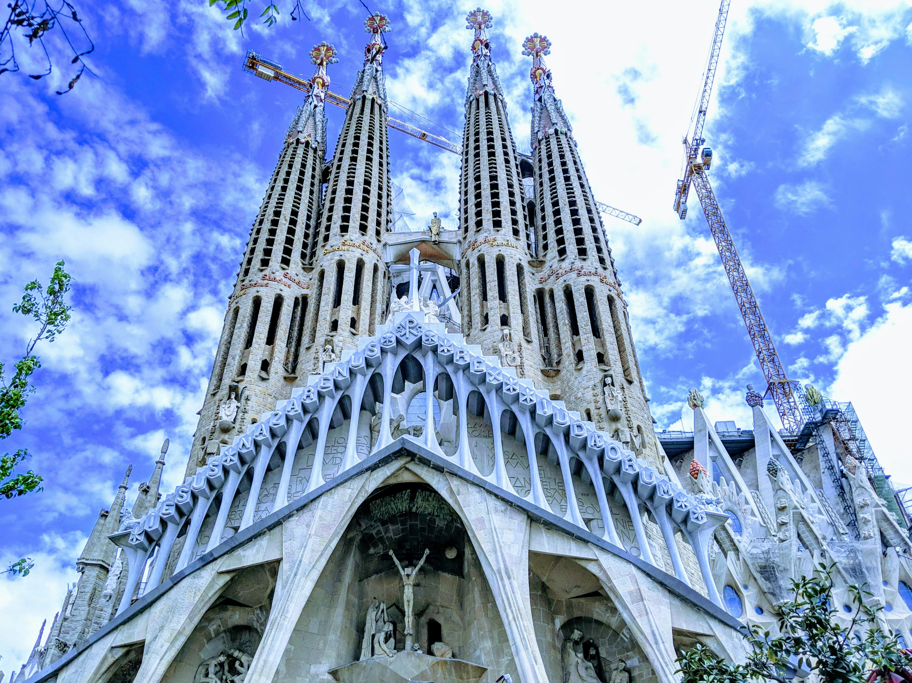
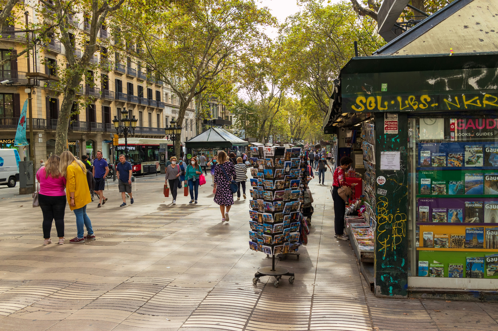
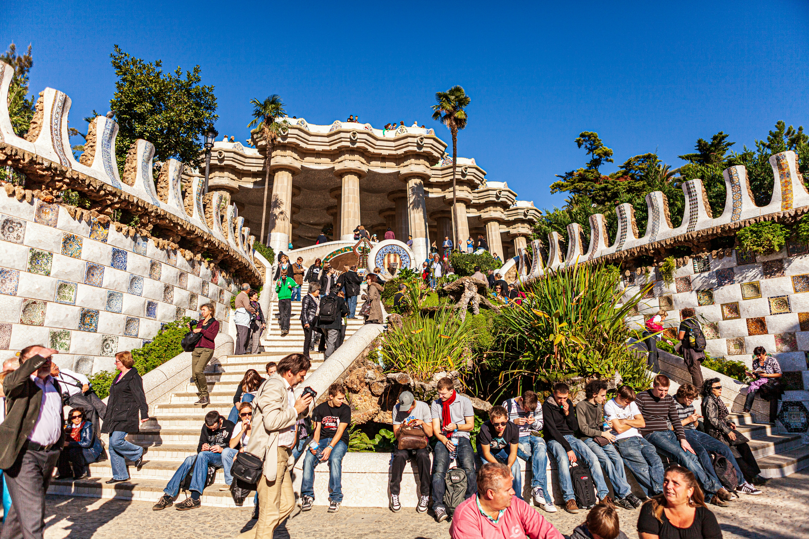

visit Barcelona and enjoy the trip

Antoni Gaudí's masterpiece, the Sagrada Familia, has been under construction since 1882 and remains Barcelona's most iconic landmark. This extraordinary basilica combines Gothic and Art Nouveau forms in a way never seen before, with its towering spires reaching toward heaven and intricate facades depicting the birth, passion, and glory of Christ. The interior is breathtaking - tree-like columns branch toward the ceiling, and stained glass windows bathe the space in kaleidoscopic light that changes throughout the day.
Book tickets months in advance and choose a time slot with tower access to climb up for panoramic city views. Audio guides explain Gaudí's innovative techniques and symbolic details hidden throughout the design. The Nativity Facade, completed during Gaudí's lifetime, contrasts with the starker Passion Facade. Visit in the morning when sunlight streams through eastern windows, creating magical color patterns on the stone columns. The museum in the basement reveals construction secrets and Gaudí's workshop models. When completed, estimated around 2026, it will have 18 spires representing the 12 apostles, Virgin Mary, four evangelists, and tallest of all, Jesus Christ.

The Gothic Quarter (Barri Gòtic) is Barcelona's oldest neighborhood, where narrow medieval streets wind between buildings dating back to Roman times. Ancient walls, hidden plazas with fountain cafes, and Gothic architecture create an enchanting maze perfect for getting lost. Discover the Barcelona Cathedral with its Gothic cloister housing 13 white geese, the remnants of Roman walls, and Plaza del Rey where Columbus reportedly met King Ferdinand and Queen Isabella after discovering America.
Las Ramblas, Barcelona's most famous boulevard, stretches from Plaça de Catalunya to the waterfront, lined with street performers, flower stalls, and cafes under plane trees. While touristy, it captures Barcelona's vibrant street life. Explore the Boqueria Market just off Las Ramblas, a sensory explosion of fresh seafood, jamón ibérico, colorful fruits, and tapas bars serving market-fresh meals. Venture into El Born neighborhood nearby for trendy boutiques, Picasso Museum, and Santa Maria del Mar basilica. Evening brings the Gothic Quarter alive with locals filling tiny bars for vermouth and tapas, jazz filtering from basement clubs, and couples dancing in shadowy plazas.

Park Güell is Gaudí's fantastical public park where nature and architecture merge into a surreal dreamscape. Originally conceived as a housing development, the park features colorful mosaic sculptures, organic-shaped structures, and the famous dragon fountain covered in vibrant broken tile work (trencadís). The undulating bench along the main terrace, the longest in the world, offers stunning views over Barcelona to the Mediterranean Sea, decorated entirely in colorful ceramic fragments.
The park's entrance features gingerbread-house gatehouses with whimsical roofs topped by mushroom-like towers. Gaudí's genius transformed structural columns into tree-trunk shapes and created covered walkways mimicking forest paths. The monumental zone requires tickets purchased in advance with timed entry, while the surrounding park remains free. Visit early morning for the best light and fewer crowds, bringing a picnic to enjoy on the terraced lawns with city views. Gaudí lived in a pink house within the park, now a museum displaying furniture he designed. The park represents Gaudí's vision of harmonizing human creation with natural forms, every detail reflecting his belief that straight lines don't exist in nature.